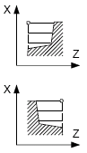
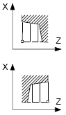

Parameter | Description | Unit |
|---|
TC  | Name of the swivel data set Note: The selection box only appears if more than one swivel data set has been set up. | |
Retraction (for ShopMill program)
| No | The axis is not retracted before swiveling | |
 | Retraction in the direction of machine axis Z | |
 | Retract towards the machine axis Z and then in the direction X, Y | |
 | Maximum retraction (up to the software end position) in the tool direction | |
 | Incremental retraction (specified retraction distance, up to the software end position) in the tool direction | |
When retracting in the tool direction, in the swiveled machine state, several axes can move (travel). | |
ZR (for ShopMill program) | Retraction path - only for incremental retraction in the tool direction | |
Align tool through beta and gamma angles |
β (for ShopMill program)
| Align tool with swivel axes   | Degrees |
γ (for ShopMill program)
| | Degrees |
Directly position rotary axes |
B1 (for ShopMill program) | Directly align tool with swivel axes: The required angle can be freely entered | Degrees |
C1 (for ShopMill program) | The required angle can be freely entered | Degrees |
αC (for ShopMill program) | Rotational position for a pole position | Degrees |
Hirth joint (for ShopMill program)
| Note: For machines with a Hirth joint | |
Tool
| Tool tip when swiveling | |
Preferred direction (for ShopMill program)
| Preferred direction of the swivel axis for several possible alignments of the machine   | |
Machining
| ∇ (roughing) ∇∇∇ (finishing)
| |
Position
| Stock removal position:     | |
Machining
direction
| Stock removal direction (longitudinal or transverse) in the coordinate system | |
Parallel to the Z axis (longitudinal) | Parallel to the X axis (transverse) | |
outside  | inside  | outside  | inside  | |
X0 | Reference point in X ∅ (abs, always diameter) | mm |
Z0 | Reference point in Z (abs) | mm |
X1 | End point X (abs) or end point X in relation to X0 (inc) | mm |
Z1 | End point Z ∅ (abs) or end point Z in relation to Z0 (inc) | mm |
D | Maximum depth infeed – (not for finishing) | mm |
UX | Finishing allowance in X – (not for finishing) | mm |
UZ | Finishing allowance in Z – (not for finishing) | mm |
FS1...FS3 or R1...R3 | Chamfer width (FS1...FS3) or rounding radius (R1...R3) - (not for
stock removal 1) | mm |
| Parameter selection of intermediate point The intermediate point can be determined through position specification or angle. The following combinations are possible - (not for stock removal 1 and 2) XM ZM XM α1 XM α2 α1 ZM α2 ZM α1 α2
| |
XM | Intermediate point X ∅ (abs) or intermediate point X in relation to X0 (inc) | mm |
ZM | Intermediate point Z (abs or inc) | mm |
α1 | Angle of the 1st edge | Degrees |
α2 | Angle of the 2nd edge | Degrees |